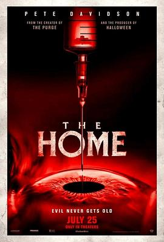

5.8
甜蜜养老院
The Home
2025
美国
评分 5.8
导演:
詹姆斯·德莫纳克
演员:
皮特·戴维森 / 约翰·格洛弗 / 布鲁斯·奥尔特曼 / 维克多·威廉姆斯 / 玛丽·贝丝·派尔
类型:
恐怖,惊悚
剧情简介
身为涂鸦艺术家的麦克斯因一次严重的破坏行为被判社区服务，他被指派到一间看似普通的养老院担任管理员。初来乍到，他在白墙之间随意挥洒颜料，却被强烈警告—— 四楼禁入。夜晚，麦克斯被朦胧的脚步声惊醒：一位老人在走廊里低语、房门轻响，月光透过百叶窗，照出斑驳的墙壁如同裂开的皮肤。他下意识捏了捏手指——染料未干，却已有血迹渗出。他结识了热情友好的住客诺玛，她笑容温暖却双眼空洞。诺玛说：“有时候，他们来找我，是因为我还记得。”她意味深长地指向四楼。麦克斯心中涌起一股莫名的不安。当他踏上通往四楼的楼梯，灯光渐暗，墙上的名字一行行被划掉。残破的助听器在地板上嗡鸣，衣架被无声地移动。麦克斯意识到，这里隐藏的远非养老生活那么简单。导演以极具压迫感的镜头语言，拉近麦克斯攥紧墙面油漆桶的手指；通过回忆镜头，他揭示麦克斯儿时作为寄养儿童、兄弟自杀的阴影。现实与梦魇交汇：旧报纸上的“自由”涂鸦、楼道墙上的血字“拾起”，都指向一个残酷的真相——这里的居民与看护者，正在以某种方式延续年轻人的生命。麦克斯在一次逃脱后回到寄养家庭，发现新来的孩子们打开一个满是仪式符号的房间。他终于明白：那四楼不是禁区，而是猎场。年轻的生命被抽取、被消耗，他的过去与这里的现实纠缠在一起。影片紧张、令人不安，却也冷静地揭露出对年龄、时间、利用与被利用的哲学思考。